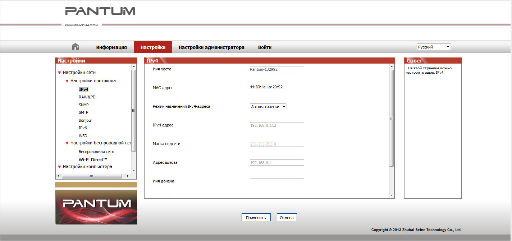

4. Настройки проводной сети (для сетевых принтеров)
Для принтера может потребоваться настройка сетевых параметров. Эти параметры можно установить с помощью встроенного веб-сервера.
4.1. Настройка IP-адреса
IP-адрес принтера можно получить автоматически с помощью функции DHCP или установить вручную.
| Автоматическая настройка
Функция автоматической настройки DHCP включена на принтере по умолчанию.
1. Подключите принтер к сети с помощью сетевого кабеля, а затем выполните подготовку к запуску.
2. Принтер автоматически получит IP-адрес, назначенный сервером. Полученный автоматически IP-адрес можно использовать через несколько минут.
|
|
Примечание:
|
• Если DHCP не удается автоматически получить IP-адрес, принтер будет использовать IP-адрес по умолчанию: 169.254.xx.xx.
• Благодаря DHCP IP-адрес принтера, автоматически назначаемый сетью, мoжет отличаться, если принтер долгое время не использовался или изменилась точка доступа к сети. Это может привести к сбою подключения к принтеру. Рекомендуется привязать IP-адрес, автоматически назначенный сетью, к Mac-адресу принтера, когда включена функция DHCP.
|
| Настройка вручную
Введите IP-адрес в строке веб-браузера, чтобы открыть веб-сервер.
1. Нажмите "Параметры" в панели навигации, чтобы открыть окно "Параметры".
2. Выберите "Параметры сети — Параметры IPV4".
3. Настройте режим назначения IP-адреса (вручную), IP-адрес и маску подсети. Другие элементы являются необязательными.
4. Нажмите "Применить", чтобы сохранить настройки.
4.2. Установите принтер в сети
Этот параметр позволяет подключить принтер непосредственно к сети и разрешить всем компьютерам, включенным в сеть, печатать на этом принтере.
1. Перед тем как запустить принтер, сначала подключите сетевой кабель к сетевому порту принтера, чтобы установить прямое подключение к сети.
2. Включите принтер и подождите пока на панели управления не загорится индикатор состояния готовности, как показано на рисунке ниже.

3. Вставьте компакт-диск принтера в компьютер. Если программа установки не запускается, найдите на компакт-диске файл "setup.exe" и дважды щелкните его для запуска.
4. Следуйте инструкциям программы установки.
5. Продолжайте до завершения установки.
4.3. Настройка сетевых продуктов
4.3.1. Просмотр или изменение параметров сети
Для просмотра или изменения настроек IP можно использовать встроенный веб-сервер.
1. Нажмите и удерживайте кнопку "Отмена/Продолжить" на панели управления для печати демонстрационной страницы со сведениями и просмотра IP-адреса принтера. Демонстрационную страницу можно напечатать, нажав и удерживая кнопку на панели управления (как показано на рисунке ниже) в состоянии простоя.
2. Введите IP-адрес в строке адреса веб-браузера для доступа к встроенному веб-серверу.
3. Перейдите на вкладку "Параметры" для получения сетевой информации. Выберите нужные параметры.

4.3.2. Настройка или изменение пароля для входа на веб-сервер
Используйте встроенный веб-сервер для настройки сетевого пароля или изменения существующего пароля.
|
|
Примечание:
|
• Имя пользователя по умолчанию – "admin", а исходный пароль – "000000".
|
1. Чтобы открыть встроенный веб-сервер, сначала выполните вход.
2. Перейдите на вкладку "Настройки администратора".
3. Введите новый пароль в поля "Пароль" и "Подтверждение пароля".
4. В нижней части окна нажмите кнопку "Применить", чтобы сохранить настройки.
4.3.3. Восстановить заводские настройки
Если необходимо сбросить все настройки принтера, можно восстановить заводские настройки. Для этого нажмите кнопку "Отмена/Продолжить", когда принтер выключен, чтобы его включить, и удерживайте в течение 10 секунд до перехода в состояние готовности для завершения сброса настроек.